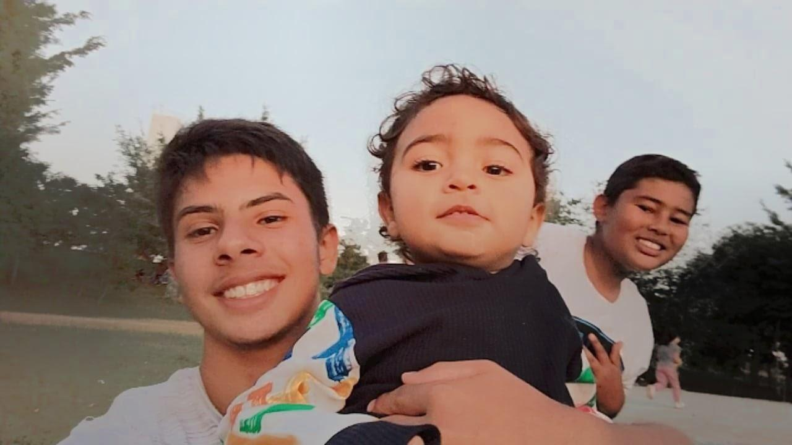

Meu nome é Matheus e kenshi é meu "nick" para jogos. Eu tenho 16 anos e 7 meses exatos, sou aquariano com descendente em touro e esse é meu primeiro site. Não sei o que escrever então vou falar um pouco sobre mim.... Sempre gostei de jogar futebol e sonhava em ser jogador profissional mas percebi que estava ficando distante e tive que focar em algo para meu futuro, hoje faço curso tecnico de informática e eu gosto bastante, pretendo levar isso ao meu futuro. Eu treino taekwondo e sou faixa verde ponta azul, sou um cara calmo, tranquilo, esforçado e um pouco timido. Assisto de tudo mas não gosto muito de terror, ouço vários tipos de músicas mas não tenho talento para cantar, estudo no segundo ano do ensino médio e sou mais novo que a maioria. Tenho dois irmãos e sou o mais velho, primeiro neto da parte de pai e um dos últimos da parte de mãe. Amo minha familia e passar tempo com eles, me esforço para deixar meus pais orgulhosos de mim... Não consigo demonstrar meus sentimentos direito e as vezes tenho dificuldade com isso, sou representante de sala no meu curso e me visto de homem arnaha quando quero aparecer para todos. Tenho muita dificuldade de me enturmar e me sentir bem em um grupo de pessoas, não consigo acreditar quando as pessoas que dizem que gostam de mim, ajudo as pessoas sempre que posso e me sinto mal quando não posso ou não tenho condições. Quero ser o melhor em tudo para receber elogios e impressionar a todos. Sou grato por quem realmente leu tudo e perdão por te fazer gastar um tempo lendo o que eu enxergo em mim mesmo.
Matheus Poloni - Etec Adolpho Berezin - 2022